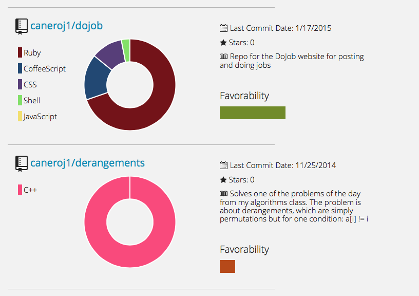
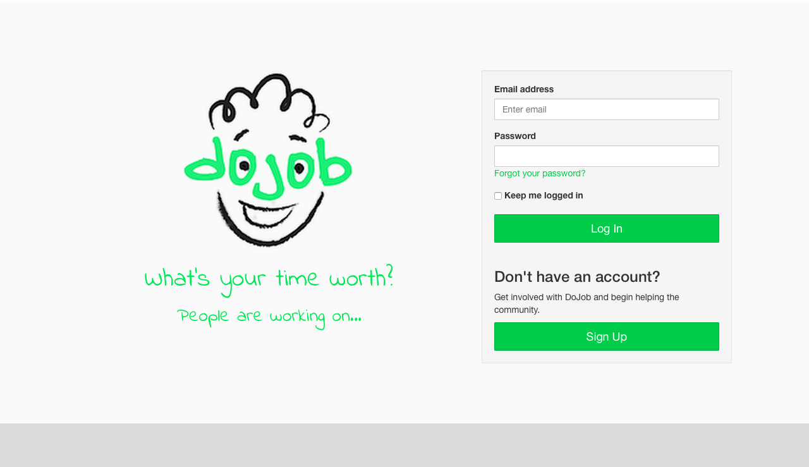

Joseph Canero
Software Engineer
About Me
What do I know?
Ruby
C++
Javascript
What do I like?
API Building
Visualization
Machine Learning
Some More Details
I just graduated from The College of New Jersey with a degree in Computer Science, and am currently working as a software engineer at ALK Technologies, Inc. in Princeton, New Jersey. I am obsessed with building awesome things, so check out some of my projects below, read my blog, or download my resume.
Projects

GitGraph
A visualization project for various GitHub statistics, such as commits per day or bytes written per language, GitGraph is written in Ruby and uses Chart.js for creating graphs. It is packaged as a gem and is intended to be highly extensible and is written in a very modular fashion.
Musicians Wanted
Musicians Wanted is an iOS app written for finding local musicians and promoting events. The app was designed and implemented during TCNJ's Spring 2015 Cloud Computing class. The application uses Amazon Web Services for its infrastructure, specifically S3, RDS, among others.
MW API
The iOS app leverages a Ruby on Rails API to handle backend transactions, like user authentication, account management, posting of events, and other actions. The API uses postgreSQL as its DB and is hosted on a Linode VM. This was my second exposure to setting up nginx and Phusion Passenger on an Ubuntu VM in order to serve a Ruby app. My first experience with DevOps, my Valentine's Day Project, is found below.
GitRecommender
GitRecommender is a GitHub recommendation system written in Rails that uses postgreSQL for its db. There are a lot of charts and visualization aspects present throughout the recommender, and I use Chart.js for all of the graphs. GitRecommender arose out of TCNJ's Spring 2015 Artifical Intelligence course, and it uses k-NN for calculating distance between repositories.

GitRecommender is incomplete as of now. The original implementation also utilized Decision Trees, and I haven't gotten around to putting those in yet. The final goal is to use k-NN and Decision Trees to come up with precision recommendations. The recommender works by computing what languages users code in the most and comparing that to the languages of random repositories. Similar repositories are scored more highly than dissimilar ones. Another metric that is used in the recommender is keyword score. Users enter up to 5 keywords, and the recommender checks for the existence of those keywords in the readmes it is analyzing.
DoJob
DoJob is a fully-functional Rails site build for a business competition at TCNJ. The aim is to empower college students to find jobs, like walking dogs or mowing lawns, in their local community. The site allows users to search for jobs, chat with other users, and arrange for jobs. In addition to that functionality, there is a wide array of skill surveys for things like Pet Care that allow users to specify their credentials. This was my first exposure with Elasticsearch and Faye, and the site was designed entirely by me.
This was my Valentine's Day, 2015 gift for my girlfriend. It is a postgreSQL-backed, Sinatra application that streams videos of my drumming. This was my first exposure to setting up a virtual machine on my own, and I learned how to set up nginx and Phusion Passenger in order to serve the application. I also utilize Amazon Web Services to stream videos stored in S3 using a CloudFront distribution.
Where Have I Worked?
Front Rush is a software company focused on athletics. They make tools to help college coaches during the recruiting process, as well as tools for high school athletes to get noticed by coaches.
When?
May 2014 - August 2014
Skills used
Ruby, Ruby on Rails, HTML (Haml), CSS (SASS), Javascript/jQuery (Coffeescript), postgreSQL
TCNJ Muse is an undergraduate summer research opportunity. I researched social computation and human computation, and developed a web app, called Cabect. The app is a "gamified" research project repository for multidisciplinary Computer Science projects. The research and work from Muse was continued throughout that academic year as my capstone project.
Contact Me
Like what you see, or have something to say? Feel free to drop me a line.